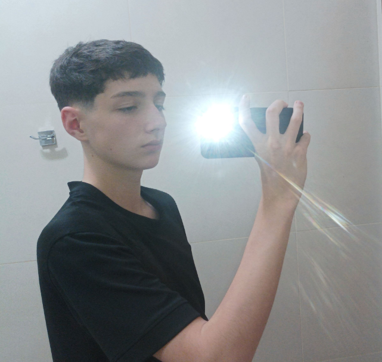
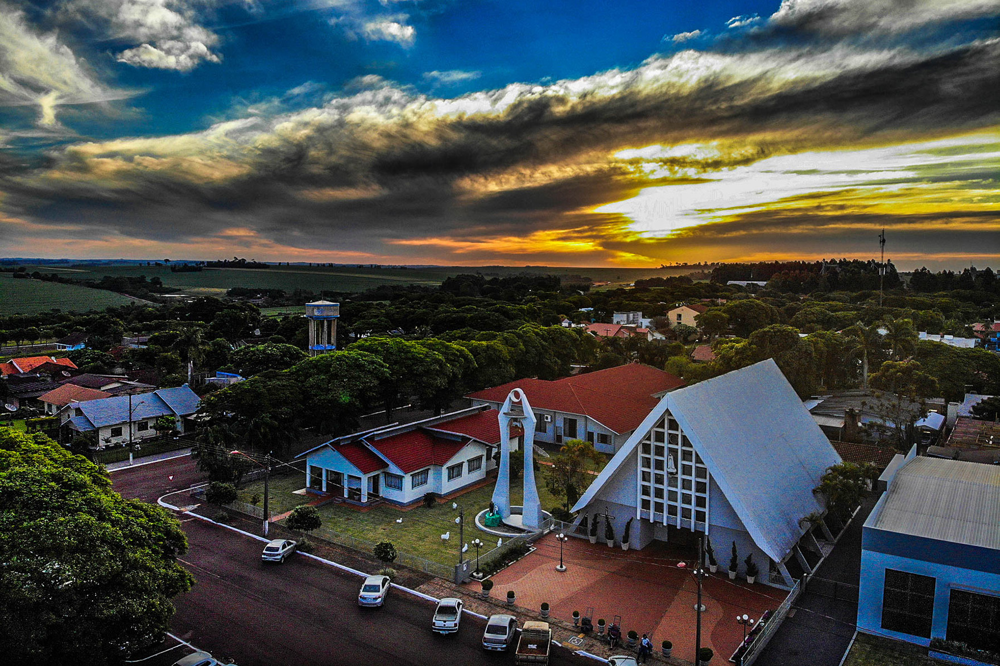

Pedro Miguel Geraldi
Maripá - ParanáSobre Mim
Pedro Miguel Geraldi
Nascimento
Meu nascimento foi um momento muito importante para minha família, marcado por alegria, emoção e muitas expectativas para o início de uma nova etapa. Desde então, venho construindo minha própria história por meio das experiências que vivi.
Trajeto Escolar
Minha trajetória escolar é formada por diferentes momentos de aprendizado e descobertas. Ao longo dos anos, conheci novas matérias, fiz amizades incríveis e desenvolvi conhecimentos que contribuem para minha formação e para o meu futuro.
Contexto Histórico
Minha história acontece em uma época marcada pelo avanço da tecnologia e pelas mudanças na forma de estudar, trabalhar e se comunicar. A internet e as novas tecnologias fazem parte do cotidiano e também estão presentes na educação.
Vivência Atual
Atualmente, continuo minha jornada de estudos e aprendizado. Todos os dias tenho novas oportunidades para aprender, enfrentar desafios e desenvolver minhas habilidades. Essas experiências ajudam na minha preparação para o futuro.
Planos Para o Futuro
No futuro eu quero ter realizações de sonhos, ter uma vida boa, um bom emprego, quero formar uma família e também ser uma boa pessoa, alegre e livre.
Pedro e Lucas: A cidade onde moramos
Maripá
Maripá é um município brasileiro no estado do Paraná, localizado na região oeste, a cerca de 600 km de Curitiba. Conhecida como a "Cidade das Orquídeas" e capital estadual do Arrancadão de Tratores, a cidade tem pouco mais de 6.800 habitantes e destaca-se pela forte produção agropecuária e piscicultura.
- Cidade das Orquídeas: Milhares de orquídeas são cultivadas e enfeitam as árvores das ruas e praças centrais.
- Arrancadão de Tratores: Tradicional evento anual da cidade que atrai visitantes de toda a região.
- Piscicultura: O município é uma das principais referências e potências na produção de peixes no estado.
Agropecuária
A cidade se destaca na produção de peixes, soja e milho.
Festa das Orquídeas
É a maior festa do município, ocorre 1x ao ano e dura 4 dias, tendo exposições de orquídeas, comidas a base de peixe (principalmente tilápia), stands, brinquedos no parque de diversões e apresentações/shows.
Falando sobre Maripá
Bairro-Centro
O Centro de Maripá é o coração da cidade, aquele lugar onde tudo acontece e onde a história parece estar viva nas ruas. Lá no começo do século XX, tudo começou em volta da velha estação de trem, criada no dia 10 de outubro de 1972, que foi o motivo do bairro crescer e se tornar tão importante.
As ruas do Centro têm um jeitinho especial, com prédios antigos que contam um pouco da vida dos moradores de antigamente, misturados com construções mais modernas que mostram como a cidade foi mudando. No meio do bairro, tem a Praça Central, com aquele coreto charmoso e árvores grandes, que já viram muita coisa acontecer. A praça é onde as pessoas gostam de se encontrar, conversar e curtir eventos, principalmente nos finais de semana, quando tem a feira.
O Centro também é onde estão a Biblioteca Municipal, o Teatro das Artes e o Museu Histórico. Ultimamente, o bairro está passando por mudanças legais, tentando ficar mais sustentável e acolhedor para todo mundo, e isso tem trazido melhorias no jeito de viver ali.
Se você vier a Maripá, não pode deixar de dar uma volta pelo Centro.
Desenvolvimento e ações do município em relação ao Meio Ambiente
O município de Maripá (PR) realiza ações de meio ambiente voltadas à sustentabilidade, preservação de recursos hídricos e educação ecológica. Como por exemplo:
Proteção e Recuperação de Nascentes: O programa foca na recuperação de nascentes na propriedade rural do maripaense. A medida protege o fluxo de água essencial para a piscicultura local.
Parcerias Estratégicas: A Secretaria de Agricultura e Meio Ambiente atua junto a gestores ambientais da Itaipu Binacional em projetos de saneamento, manejo de resíduos e conservação.
Educação Ambiental e Plantio: A prefeitura promove plantio de árvores e de orquídeas — ligando a identidade de Maripá como a "Cidade das Orquídeas" — além da soltura de alevinos e atividades pedagógicas com alunos da rede municipal.
Coleta Seletiva: O município conta com coleta de lixo seletiva tanto na área urbana quanto na rural.
Planejamento de Saneamento: Maripá possui Plano Municipal de Saneamento Básico estruturado para orientar o crescimento sustentável da infraestrutura urbana e rural.
Matéria a respeito das ações de Maripá no meio ambiente